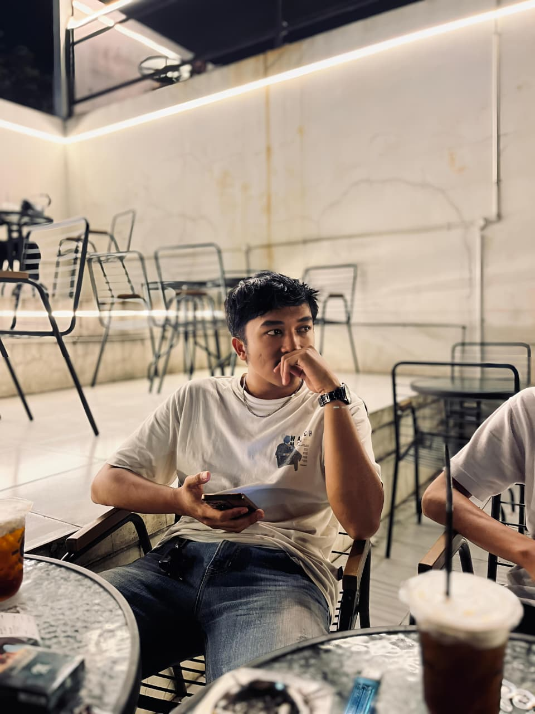
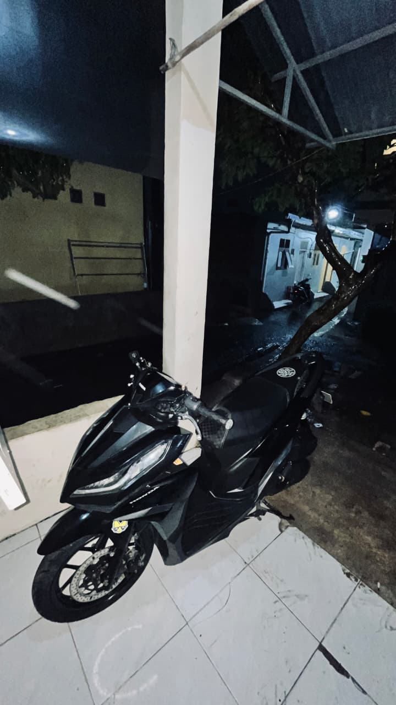
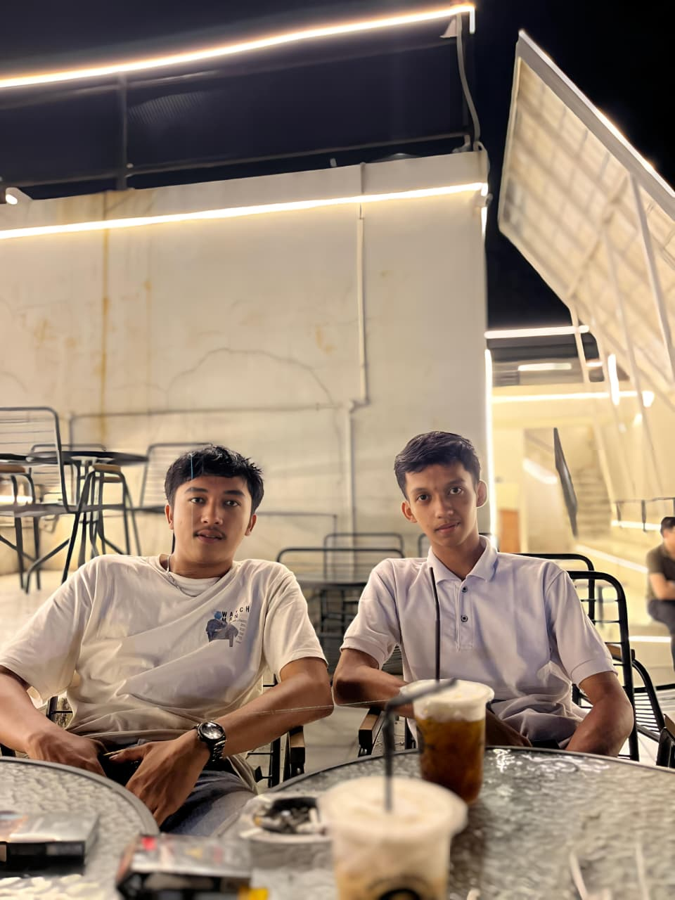

MySelf

My Motorbike

My Friend
Halo, perkenalkan saya Zaky yang bukan sekadar nama, tapi juga cerita yang sedang terus ditulis. Dan saya adalah seseorang yang percaya bahwa setiap langkah kecil punya arti besar dalam setiap tantangan, Dengan semangat belajar yang tinggi dan rasa ingin tahu yang tidak pernah habis, saya selalu berusaha berkembang menjadi versi terbaik dari diri saya sendiri. Saya mungkin belum sempurna, tapi saya selalu siap untuk mencoba, gagal, bangkit, dan menang. Karena bagi saya, proses itu lebih penting daripada sekadar hasil. Jadi, jika kamu mencari seseorang yang punya tekad kuat, pemikiran terbuka, dan siap menghadapi dunia...ya, itu saya.
- zaky624